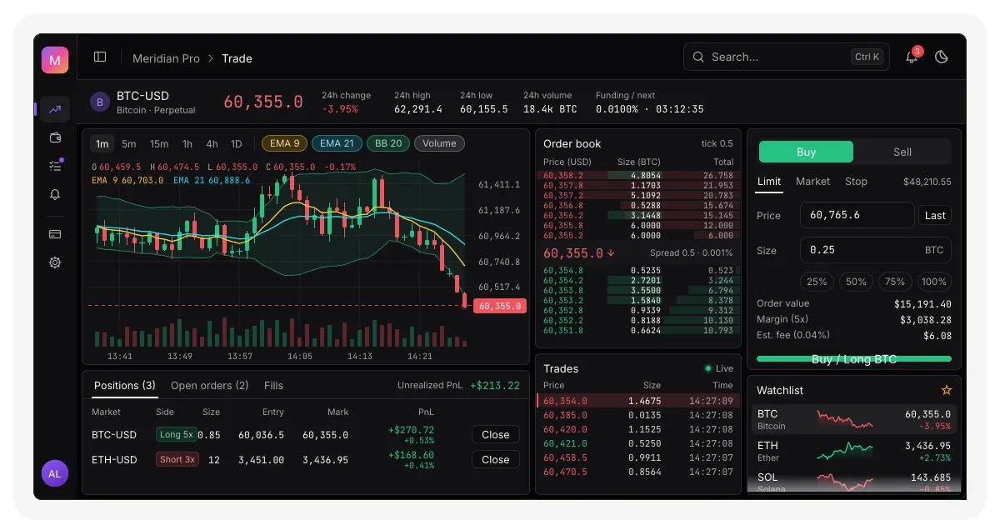
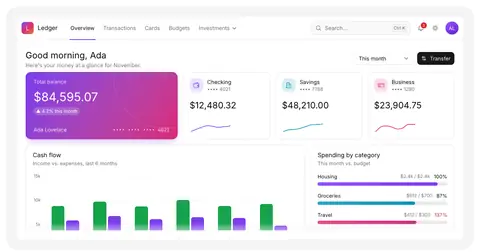
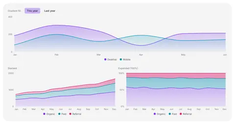
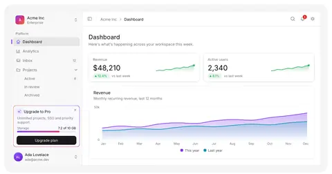
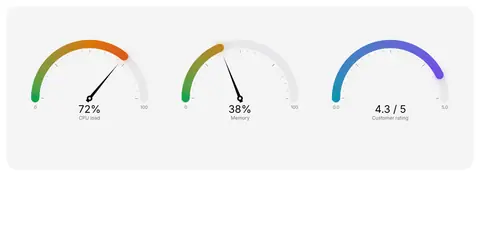

Dashboards in egui that feel alive
Trading terminals, crypto and infrastructure monitors, analytics and internal tools: glowkit adds charts that draw in and track the pointer, numbers that count to their value, and app shells that hold it all together, in a native Rust binary.

Why glowkit
Charts that respond
Line, area, bar, pie, radar, scatter, heatmap, treemap, funnel, candlestick and Sankey charts animate in, snap a crosshair to the nearest point and show tooltips.
Live numbers
KPI tiles with counting values, delta badges and sparklines; tracker and uptime bars; gauges and activity rings that ease between updates instead of jumping.
Real templates
A trading terminal with order book and depth, an analytics dashboard, a finance dashboard, a CRM pipeline and a developer console you can start from.
App shells
Sidebar, inset, floating, rail, dual-pane, top-nav and inspector layouts that collapse with springs, plus a command palette and data grid.
Idle stays idle
One-shot animations stop requesting repaints when they finish, so a dashboard that is not changing does not burn CPU.
Themeable
Chart palettes come from semantic theme tokens. Switch light and dark, or set your brand colors once for every chart and egui widget.
Best components

Trading Terminal
TemplatesA live trading terminal: candlesticks with EMA / Bollinger / volume, crosshair, wheel zoom and drag pan; an order book with depth bars and flashing levels, a trade tape, positions with live PnL, order entry (B / S, limit / market) and a watchlist with sparklines.

Analytics Dashboard
TemplatesKPI tiles with sparklines, revenue area chart, traffic donut, top pages and recent orders, with date-range tabs that reload the data behind skeletons.

Finance Dashboard
TemplatesGradient balance card, account cards with sparklines, cash-flow bars, spending vs. budget, filterable transactions and a working transfer dialog.

Candlestick Chart
ChartsOHLC candles growing from their midpoints, with a price-tagged crosshair and an OHLC tooltip.

Line Chart
ChartsMulti-series lines that draw in, with a snapping crosshair tooltip, clickable legend, glow, gradient and dashed variants.

Area Chart
ChartsGradient-filled areas that rise from the baseline: overlapping, stacked and expanded to 100%, with a dataset switch that animates.

KPI Stat Tile
ChartsKPI cards with a counting number, a colored delta badge and a sparkline.

Sankey Chart Card
ChartsA true sankey in a calm dashboard card: pill nodes sized by flow, smooth ribbons as thick as their value, hover to isolate a node or a ribbon.

Heatmap
ChartsA labelled matrix whose cells fade in along a diagonal, with a color key and hover tooltips.

Data Grid
Canvas & EditorsA virtualized spreadsheet with 10,000 rows: frozen header, row numbers and first column, drag-select ranges, type to edit, Enter / Tab navigation, resize columns, TSV copy / paste and a live sum.

App Shell: Sidebar
Dashboards & ShellsCollapsible sidebar (Ctrl+B springs it to an icon rail) with workspace switcher, nested groups, badges, upgrade and user cards; topbar with breadcrumb, Ctrl+K search, notifications and theme toggle.

Gauge
ChartsSemicircular gauges with a gradient arc, tick marks and a needle that springs to its value.
A KPI row and a chart
Components take your data as slices and draw into any egui layout. Hover and animation state is kept for you.
cargo add glowkit eframeuse glowkit::prelude::*;
use glowkit::charts::StatTile;
ui.add(StatTile::new("Total revenue", 45_231.89).prefix("$").decimals(2)
.delta(20.1).caption("vs last month").spark(&revenue));
use glowkit::charts::{Series, LineChart, Curve, LineStyle};
let series = [Series::new("Desktop", desktop), Series::new("Mobile", mobile)];
ui.add(LineChart::new(&series).labels(&MONTHS).dots(true).height(260.0));
ui.add(LineChart::new(&revenue).glow(true).gradient_stroke(true).curve(Curve::Natural));
ui.add(LineChart::new(&plan).series_style(1, LineStyle::Dashed).curve(Curve::Step));Keep exploring
Make your Rust app glow
Open source, MIT or Apache-2.0. One cargo add away.